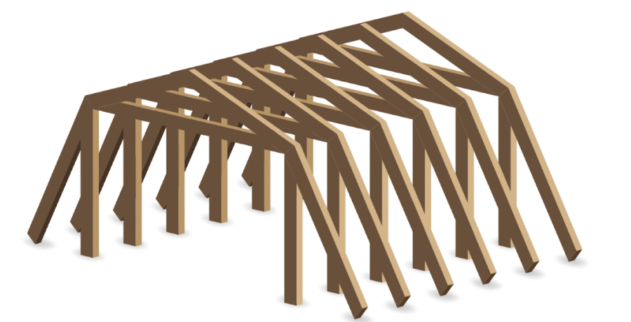
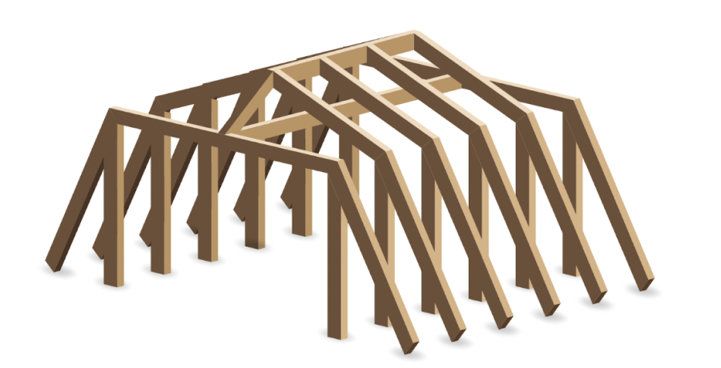

Мансардная, вальмовая и многощипцовая кровли – это сложные конструкции, которые не только придают дому стильный архитектурный облик, но и увеличивают полезное пространство внутри.
В статье расскажем про отличия и особенности возведения стропильных систем этих конструкций, а также объясним, как сделать герметичные ендовы на кровле.
Усложненная форма кровли придает любому дому оригинальный и привлекательный внешний вид, а также открывает большие возможности для использования чердачного пространства. Однако при этом усложняются также конструкция стропильной системы и монтаж кровельного покрытия.
Двухскатная крыша. Она самая простая в монтаже: стропила из цельного бруса образуют две плоскости, которые покрывают кровельным материалом. Прямоугольная форма скатов упрощает монтаж и минимизирует количество отходов. А в дополнение к окнам на фронтонах можно установить и мансардные – получится небольшая мансарда со скошенными потолками.
Ломаная двухскатная крыша. Она позволяет увеличить полезную площадь комнаты и обойтись без наклонных поверхностей на потолке. Тогда вдоль стен можно разместить, например, шкафы.
Главный недостаток двухскатных кровель – большое ветровое сопротивление. Если дом расположен на открытом пространстве, да еще в районе с частыми и сильными ветрами, они создают на стропильную систему большую дополнительную нагрузку.
Вальмовая крыша. Конструкция у таких крыш очень устойчивая и хорошо обтекается ветром: вместо вертикальных фронтонов в них устраивают пологие треугольные скаты – вальмы. Стропильная система гораздо сложнее, чем у двухскатных, так как необходимо сформировать не две, а четыре плоскости.
Полувальмовая крыша. Сочетает элементы двухскатной и вальмовой. Фронтоны позволяют установить окна, а полувальмы над ними снижают ветровые нагрузки на стропильную систему.
Многощипцовая крыша. Еще более сложную конфигурацию имеет такая конструкция. Ее можно создать из произвольного количества скатов самой разной формы. Благодаря этому дом приобретает особенную выразительность, а внутренний объем чердачного пространства можно разделить на комнаты разного размера.
С увеличением количества скатов возрастает и сложность стропильной системы. Очень важно, чтобы ее проектировал архитектор, который сможет не только выбрать эффектный внешний вид, но также правильно рассчитать нагрузки. Ошибки в проектировании чреваты деформацией всей конструкции и протеканием крыши.
Долговечность и герметичность крыши зависят не только от конструкции стропильной системы, но и от выбранного покрытия. Для простой формы годятся любые кровельные материалы, в том числе крупноформатные листовые: металлочерепица или битумные листы вроде ондулина.
По мере усложнения формы кровли применять подобные материалы становится сложнее. Растет количество обрезков, трудно добиться герметичности на стыках плоскостей, особенно в ендовах – внутренних углах в местах стыка двух скатов.
Как показывает опыт, гибкая черепица – один из лучших кровельных материалов для крыш сложной формы. Например, SHINGLAS от ТЕХНОНИКОЛЬ: она долговечная, бесшумная во время дождя, мало весит, просто монтируется, экономичная и не создает много отходов. К тому же в коллекции есть большой выбор внешне привлекательных вариантов.
Важно также гарантировать герметичность кровли. Для этого под гибкую черепицу укладывают подкладочный ковер – например, ANDEREP NEXT. Этот безосновный материал изготавливают из битума, модифицированного стирол-бутадиен-стиролом. Высокое содержание битума позволяет ему самозалечиваться: когда кровлю нагревают солнечные лучи, повреждения ковра – например, от гвоздей или случайных проколов – затягиваются.
Благодаря сочетанию прочности и эластичности безосновный ковер ANDEREP NEXT нивелирует незначительные неровности и подвижки основания кровли, неизбежно возникающие при усадке деревянных элементов стропильной системы. В отличие от аналогичных материалов на основе стеклохолста, он не образует волн, ухудшающих внешний вид кровли.
В ендовах, куда во время дождя собирается вода одновременно с двух смежных скатов дополнительно укладывают ендовный ковёр — рулонный битумно-полимерный материал на основе полиэстера, который значительно снижает риск протечек кровли в таком нагруженном месте как ендова. Для защиты от ультрафиолета и атмосферных воздействий материал покрыт с верхней стороны крупнозернистым базальтовым гранулятом, цвет которого подбирают в цвет кровли.